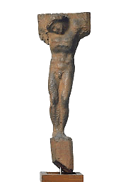

|  | |||||
| Michelangelo Buonarroti Florence 1475–Rome 1564 Crucifix c. 1562 Wood, possibly linden Ente Casa Buonarroti, Florence Cat. 82 (Photo: Antonio Quattrone, Florence) |
|||||
| © 2002. The Art Institute of Chicago. All text and images on this site are protected by U.S. and international copyright laws. Unauthorized use is prohibited. | |||||